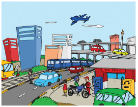
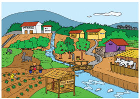
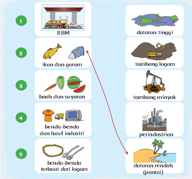
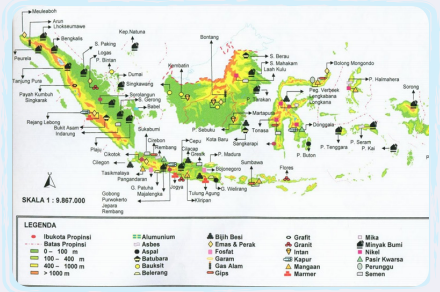
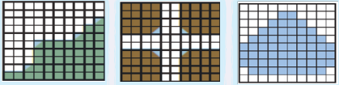
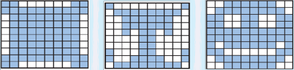
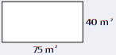
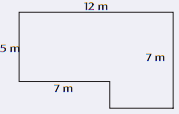
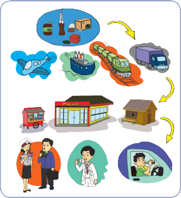
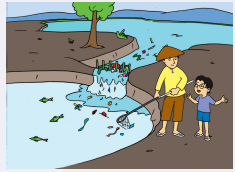

| A | Perhatikanlah gambar susana
kota di samping ini! Tuliskan
jenis-jenis pekerjaan yang ada
di kota. |
 |
| Perhatikanlah gambar susana
desa di samping ini! Tuliskan
jenis-jenis pekerjaan yang ada
di desa. |
 | |
| B |
Seorang pengusaha industri rumah tangga ingin membuat sejumlah meja dan
kursi .
Ia sedang bimbang apakah akan menggunakan bambu, kayu, atau besi untuk
meja dan kursinya.
Ia ingin membuat meja dan kursi yang kuat, murah, dan tahan lama.
Bantulah pengusaha tersebut untuk memilih salah satu dari ketiga bahan baku
tersebut.
Tuliskan alasanmu mengapa memilih bahan baku tersebut. |
|
| C |
Sikap apa yang harus dimiliki oleh setiap pekerja? Jelaskan dengan singkat! |
|
| D |
Tahukah kamu? Dari manakah asal benda-benda yang ada di sekitar kita? Berilah
tanda panah untuk menghubungkannya!  |
|
| E |
Amati Peta Sumber Daya Alam Negara Indonesia di bawah ini.  Indonesia memiliki kekayaan alam yang beragam, tahukah kamu jenis-jenis sumber daya alam yang ada di setiap pulau kita? Isilah tabel berikut untuk mengetahui kekayaan alam Negara Indonesia. Pulau Jawa Pulau Sumatra Pulau Kalimantan Pulau Sulawesi Pulau Papua |
|
| F |
Apakah jenis sumber daya alam tersebut akan habis? Jelaskan dengan singkat! Bagaimana supaya sumber daya alam tersebut bisa dimanfaatkan dalam jangka waktu yang lama? Jelaskan dengan singkat! |
|
| G |
Carilah luas permukaan setiap bidang yang berwarna berikut!   | |
| H |
Pecahkanlah masalah berikut!
Seorang petani mempunyai sebidang sawah deng
bentuk dan ukuran, seperti gambar di samping. |
 |
| Untuk kesuburan tanaman padi, petani tersebut memberikan 8 gram pupuk untuk setiap 1 m2. Berapa gram pupuk yang dibutuhkan petani tersebut untuk seluruh kebunnya? | ||
| I |
Ini adalah ruangan Perpustakaan SD Nusantara
1 yang berbentuk huruf "L". Ruang Perpustakaan
ini akan dipasang karpet. |
 |
| J | Coba buatlah soal cerita kreasimu sendiri dengan menerapkan konsep luas bangun datar persegi panjang dan tuliskan jawabannya! | |
Hari ini Udin bersama ayah mengunjungi paman di desa. Di tengah perjalanan, Udin dan ayah merasa haus. Mereka kemudian membeli teh kemasan. Udin kembali teringat dengan cerita "Ulil si Pucuk Daun Teh".
Udin berpikir bagaimana teh dari pegunungan bisa sampai ke kota dan ke desa. Yuk, kita bantu Udin!
Amati gambar dan diskusikan bersama teman. Jawab pertanyaan berikut
1. Bagaimana proses teh bisa ke tangan pembeli? 2. Siapa saja yang menikmati teh pada gambar di atas?Pilihlah sebuah barang yang kamu gunakan dalam kehidupan sehari-hari. Pikirkan bagaimana barang tersebut bisa sampai kepadamu!
Udin telah sampai di rumah paman di desa. Paman Udin adalah seorang petani. Ia
memiliki ladang yang ditanami dengan berbagai jenis tanaman.
Setibanya di sana, Udin melihat paman akan menanam jagung di ladang.
Ia juga akan memagari ladang jagungnya menggunakan batang-batang bambu.
Jika 1 m2 membutuhkan 5 kantong biji jagung, berapa banyak kantong biji jagung yang diperlukan?
Untuk menentukan banyaknya kantong biji jagung yang akan ditanam, kamu harus mengetahui luas ladangnya.
luas ladang pak tani adalah:
Banyak kantong biji jagung yang diperlukan adalah:
Untuk membuat pagar sebuah bidang area, kamu harus mengetahui keliling bidang tersebut.
Keliling ladang pak tani adalah :
Jika setiap 1 meter dari ukuran sisi memerlukan 8 batang bambu, berapakah jumlah bambu yang ia perlukan untuk memagari ladangnya?
Sekarang cobalah untuk berkreasi membuat cerita tentang seorang petani yang akan
menanam sayuran di ladang pertanian. Perhatikan langkah-langkah berikut:
1. Tentukan ukuran panjang dan ukuran lebar ladang.
2. Hitung luasnya.
3. Tentukan jumlah tanaman yang diperlukan untuk area 1 meter persegi.
4. Hitung jumlah sayuran yang diperlukan.
Udin, kemudian berjalan-jalan di desa. Ia menyusuri aliran sungai yang ada di desa Udin kemudian bertemu dengan seorang Petambak Ikan. Petambak ikan adalah pekerja yang pekerjaannya mem buat tambak/kolam dan meme lihara ikan untuk dikembangkan di tambak tersebut. Jika jumlah ikan telah banyak dan cukup besar untuk dimakan Petambak ikan akan menjual ikan-ikannya kepada penjual ikan dan penjual ikan akan membawanya ke kota.
Udin melihat Petambak Ikan tersebut sedang sibuk membersihkan sampah di tambaknya. Tambak ikan tersebut mendapatkan air dari sungai yang dialirkan masuk ke tambaknya.
Yuk, kita simak percakapan Udin dengan petambak ikan tersebut.
Udin : Apa yang terjadi dengan tambak Bapak?Percakapan tersebut bisa ditulis dalam bentuk yang lain
Pada suatu hari Udin berjalan menyusuri sungai. Udin bertemu dengan seorang Petambak Ikan yang sedang membersihkan tambaknya. Udin bertanya, "Apa yang terjadi dengan tambak bapak?". Petambak Ikan menjawab, "Tambak ini penuh sampah." Udin kemudian bertanya lagi, "Mengapa tambak ini penuh sampah?" Petambak ikan kembali menjawab, "Karena banyak orang membuang sampah, sampahnya jadi masuk ke tambak" Udin semakin penasaran. Ia kembali bertanya, "Apa akibat sampah bagi ikan-ikan yang hidup di tambak?" "Ikan-ikan bisa mati karena tidak bisa bernapas," jawab Petambak.
Amati dan diskusikanlah dua jenis teks tentang Udin dan Petambak Ikan di atas, bersama teman-temanmu! Kemudian, jawablah pertanyaan-pertanyaan berikut.
1. Bagaimana perbedaan cara penulisan dua jenis teks tersebut?Apa yang telah kamu pelajari hari ini? Bagaimana kamu menerapkannya dalam kehidupan sehari-hari?
Diskusikan bersama orang tuamu di rumah tentang alasan mengapa seseorang harus bekerja. Cari tahu alasan-alasannya.